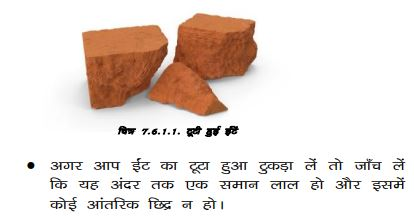
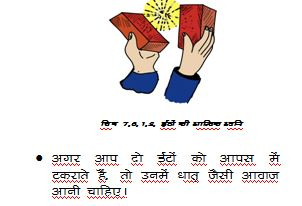
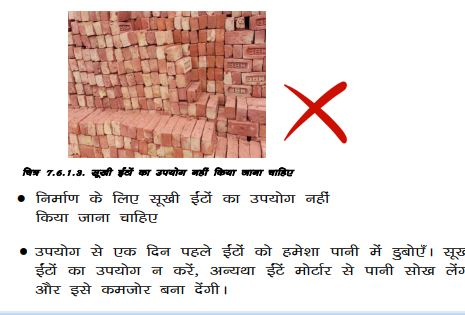
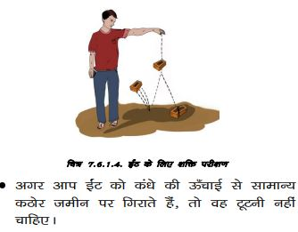
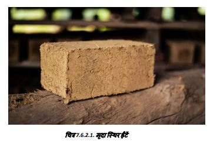
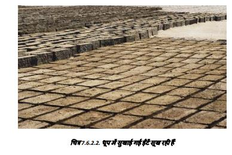

ईंटें
7.6.1. लाल जली हुई ईंटें
     
धूप में सुखाई गई ईंटें
धूप में सुखाई गई ईंटें बनाने के लिए स्थानीय मिट्टी की उपयुक्तता की जाँच करने के लिए, हाथ में नम मिट्टी की 3 इंच व्यास की गेंद बनाएँ। इसे सूखने दें। यदि मिट्टी बहुत अधिक रेतीली है तो गेंद उंगलियों के बीच दबाव में टूट जाएगी, यदि मिट्टी बहुत अधिक चिकनी है तो गेंद सूखने पर दरारें विकसित करेगी, एक उपयुक्त मिट्टी एक मजबूत दरार मुक्त गेंद देगी। एक अच्छी मिट्टी में लगभग 35 से 40: मिट्टी गाद होती है और बाकी बारीक रेत होती है। उचित मात्रा में चूना/सीमेंट डालकर और अच्छी तरह मिलाकर ईंटों को स्थिर किया जा सकता है।
मूल रूप से शुष्क क्षेत्रों में, दो मंजिला घरों के लिए सीमेंट मोर्टार में मिट्टी की ईंटों (ताकतः 20 किलोग्राम/वर्ग cm या बेहतर) का उपयोग करके 35cm मोटी लोड असर वाली दीवारें बनाई जा सकती हैं, जिसमें उचित म्फ और नमी संरक्षण उपाय शामिल हैं।
दीवारों को लंबे जीवन और बेहतर फिनिश के लिए फेरो-सीमेंट उपचार/प्लास्टर द्वारा नमी से बचाया जा सकता है।

सीमेंट चूना स्थिर मिट्टी ईंटें उन क्षेत्रों में भी डाली जा सकती हैं जहाँ अच्छी मिट्टी उपलब्ध है, लेकिन जली हुई मिट्टी की ईंटें या सीमेंट चूना स्थिर ईंटें महंगी हैं और स्थानीय रूप से उपलब्ध नहीं हैं।
- मिट्टी का विश्लेषणः मिट्टी के एक तिहाई गिलास को = गिलास पानी में घोलें, अच्छी तरह मिलाएँ और इसे 24 घंटे तक जमने दें। जाँच करें कि मिट्टी़गाद जमा कुल जमा का 30-40: है या नहीं।
- समायोजनः यदि मिट्टी़गाद जमा 40: से अधिक है, तो रेत में मिलाएँ। स्थिरीकरण के लिए, मिट्टी के द्रव्यमान के वजन के हिसाब से 5-6 सीमेंट या 6: चूना मिलाएँ और आवश्यक मात्रा में पानी के साथ अच्छी तरह गूंधें।
- ईंट/ब्लॉक निर्माणः सुनिश्चित करें कि मिश्रण थोड़ा गीला हो और ईंट/ब्लॉक बनाने के लिए हाथ से संपीड़ित करने वाली मशीन का उपयोग करें। उन्हें 24-48 घंटे के लिए आराम करने दें, फिर उन्हें 3 परतों से अधिक नहीं परतों में रखें
- तराई ईंट/ब्लॉक को गर्म जलवायु में 15 दिनों के लिए या ठंडे जलवायु में 20 दिनों के लिए ढककर रखें और नमी बनाए रखें ताकि वे ठीक से क्योरिंग हो सकें।
- चिनाई निर्माणः ईंट/ब्लॉकों का उपयोग तब करें जब वे कम से कम 30 दिन पुराने हों और पूरी तरह से सूख गए हों। चिनाई 1:6 सीमेंट रेत मोर्टार या लगभग 7: सीमेंट के साथ मिट्टी सीमेंट मोर्टार का उपयोग करके की जा सकती है।
6. सीमेंट़ रेत मोर्टार के लिए 24 घंटे और स्थिर मिट्टी मोर्टार के लिए 36 घंटे के बाद पानी से तराई शुरू करें।